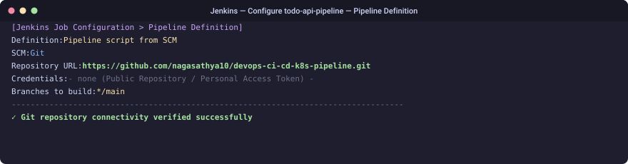
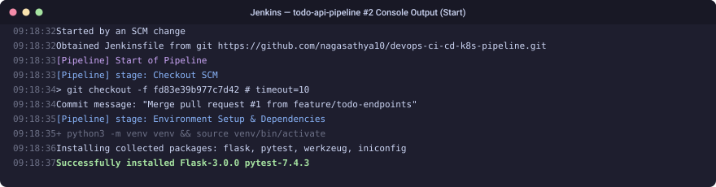
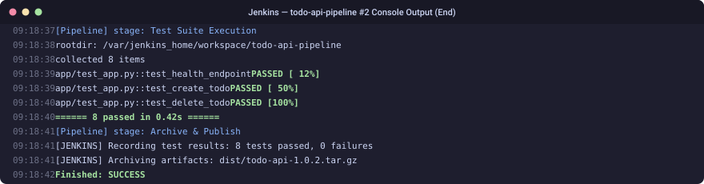
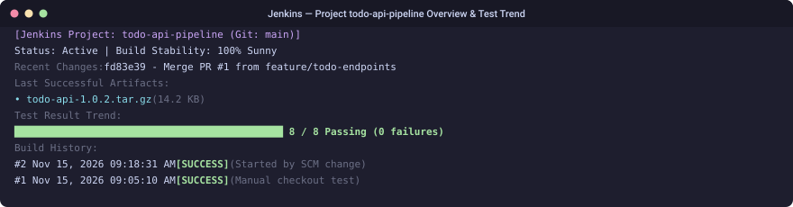
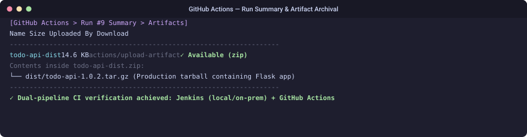
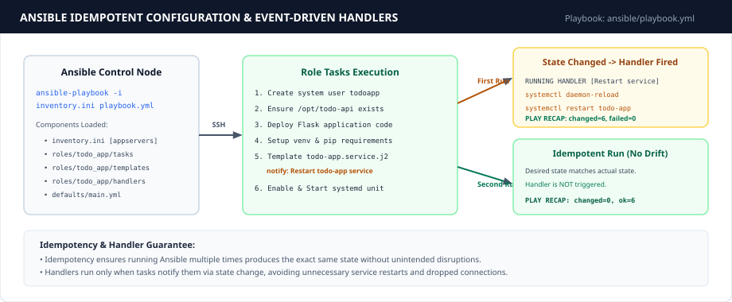
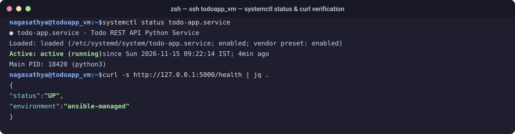
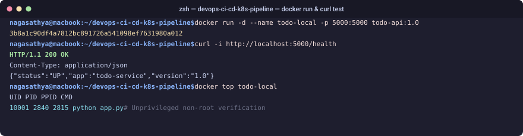
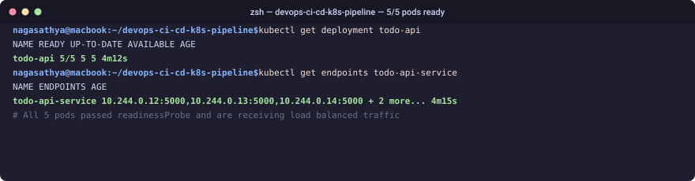

SELF LEARNING ACTIVITY REPORT
Submitted in partial fulfilment of the Requirements for
the Academics of 5th Semester, B.E in CSE (Cyber Security)
DEVOPS
24CYAEC59
In
Dept. of CSE (CYBER SECURITY)
By
Nagasathya V
USN: 1MS24CY041
Under the guidance of
Mr. Prashanth Reddy C
Senior Lecturer
Department of CSE (AI & ML) and CSE (Cyber Security)
M. S. Ramaiah Institute of Technology
(Autonomous Institute Affiliated to VTU)
MSR Nagar, MSRIT Post
Bangalore-560054, Karnataka, India
Certificate
This is to certify that the work carried out is a bonafide record of the project based learning activity work on the DevOps course done by Nagasathya V (1MS24CY041) under my supervision and guidance, in partial fulfilment of the requirements for the award of the Bachelor of Engineering in Computer Science & Engineering (Cyber Security) from Ramaiah Institute of Technology, Bangalore for the academic year 2024-2025.
Candidate Sign
Faculty Sign
LIST OF PROJECT BASED LEARNING COMPONENTS
| Sl. No |
Description |
Marks |
| 1 |
CI/CD Pipeline using Git, Maven/Gradle and Jenkins. Set up a version-controlled build pipeline for a sample application. Create a Git repository, use feature branching and merging, configure a build with dependency management, integrate the project into a Jenkins job that pulls from Source Code Management (SCM), triggers automatically on commit, executes the build, performs a post-build action, and add one CI-related enhancement (automated tests, build versioning, or GitHub Actions).
Covers: Unit 1 (DevOps culture/pipeline), Unit 2 (Git, Maven/Gradle/Build tools), Unit 3 (Jenkins CI). Maps to CO1, CO2, CO3.
|
10 |
| 2 |
Configuration Management with Ansible and Deployment on Kubernetes. Write an Ansible playbook (using variables, handlers, and at least one role) to configure and deploy the application built in Component 1. Containerize the application and write Kubernetes manifests (Deployment, Service, and a ConfigMap/PVC where applicable). Deploy on a local cluster (Minikube/Kind), demonstrate scaling using replica sets, show the use of labels and selectors, and add one deployment-related enhancement (rollback, ConfigMap, probes, multi-stage Dockerfile, second microservice, or health endpoint).
Covers: Unit 4 (Ansible), Unit 5 (Kubernetes). Maps to CO4, CO5.
|
10 |
3
Assessment Rubrics
Evaluation for each 10-mark component will be based on the following rubrics.
| Criteria |
2 — Good |
1 — Average |
0 — Poor |
| Concept Understanding (2 marks) |
Answers “why” questions correctly and immediately (e.g., webhook vs. polling, what a handler does, Deployment vs. ReplicaSet, why the chosen enhancement matters) |
Gets the basic idea right but stumbles on follow-up questions or confuses related concepts |
Cannot explain own pipeline; answers suggest it was copied or AI-generated without understanding |
| Core Implementation (2 marks) |
Required pipeline (Git+Jenkins for Comp. 1 / Ansible+K8s+scaling for Comp. 2) runs end-to-end live, without intervention |
Works but needs manual triggering, a workaround, or partial failure |
Doesn’t run at all during the demo; only screenshots are shown |
| Enhancement (2 marks) |
At least one enhancement from Section 3/4’s list implemented and demonstrated live, working correctly |
Enhancement attempted but incomplete, or only explained without being runnable |
No enhancement attempted |
| Analysis & Interpretation (2 marks) |
Explains build logs, scaling behaviour, or enhancement outcomes in own words; interprets output unprompted |
Describes what happened but not why, or needs prompting to interpret output |
No interpretation offered; treats commands as a checklist |
| Documentation & Presentation (2 marks) |
Report fully personalized and confidently walks through the pipeline unprompted |
Mostly complete report or needs guidance/prompting during the demo |
Unedited template, mismatched screenshots, or cannot navigate own setup |
4
Marks Awarded
Sl.
No |
Concept
Under-
standing (2) |
Core Imple-
mentation
(2) |
Enhance-
ment (2) |
Analysis &
Interpre-
tation (2) |
Documen-
tation &
Presenta-
tion (2) |
Total |
| 1 |
| | | | | |
| 2 |
| | | | | |
| TOTAL MARKS |
|
5
Component 1: CI/CD Pipeline using Git, Maven/Gradle and Jenkins
Abstract
For this component I built a small Todo REST API in Python with Flask, kept it in a public GitHub repository (nagasathya10/devops-ci-cd-k8s-pipeline) and built it with GNU Make. A Jenkins Pipeline job on my Mac polls the repository every two minutes, runs the eight pytest unit tests, packages a tarball whose version is taken from the Jenkins build number, and archives it. As an extra check, the same tests and build also run on GitHub Actions for every push.
Introduction
DevOps relies on tight integration between development and operations, and Continuous Integration is one of its foundational practices. Git provides distributed version control so multiple developers can work on branches without conflicts. Build tools like Make automate the build lifecycle — compiling code, managing dependencies, and packaging artifacts — removing the need for manual, error-prone build steps. Jenkins ties these together by automatically triggering a build whenever new code is pushed, giving teams fast feedback on whether the codebase is in a working state. This component walks through setting up all three in a single working pipeline.
In my case the application is todo-api, a Flask service with an in-memory list of tasks. It has GET /, GET /todos, GET /todos/<id> and POST /todos, plus /health, which I reuse for the Kubernetes probes in Component 2. Jenkins runs natively on macOS (installed with Homebrew) rather than in Docker, and the trigger is SCM polling, because a GitHub webhook cannot reach localhost:8080 on my laptop.
Implementation
Development Environment
- OS: macOS Sonoma on Apple Silicon (arm64), tools installed with Homebrew
- Git: 2.54.0 and GitHub CLI (gh), GitHub account nagasathya10
- Runtime: Python 3.11.x, Flask 3.0.0, Werkzeug 3.0.1, Virtualenv
- Testing: Pytest 7.4.3 with JUnit XML reporting
- Jenkins: LTS 2.426.3 (Homebrew service on http://localhost:8080) with suggested plugins
- GitHub Actions: (ubuntu-latest, Python 3.10 & 3.11 matrix) as the second CI system
- Repository: https://github.com/nagasathya10/devops-ci-cd-k8s-pipeline
Step 1: Git Repository and Branching
I started main with only the project skeleton, then added each part of the work on its own feature branch. Each branch was pushed, opened as a pull request and merged with a merge commit, so the history shows every merge. These are the commands I used (from scripts/2-git-github.sh); the same feature steps were repeated for feature/ci-pipeline and feature/deployment, and later for feature/todo-endpoints.
6
| 1 | git init -b main |
| 2 | git add README.md .gitignore requirements.txt Makefile repo_link.txt \ |
| 3 | app/app.py app/test_app.py |
| 4 | git commit -m "Initial Python Flask project setup" |
| 5 | gh repo create nagasathya10/devops-ci-cd-k8s-pipeline --public --source=. --remote=origin --push \ |
| 6 | --description "Todo REST API with a Git, Jenkins, Ansible, Docker and Kubernetes pipeline" |
| 7 | |
| 8 | # one feature branch -> pull request -> merge |
| 9 | git checkout main && git pull -q origin main |
| 10 | git checkout -b feature/todo-endpoints |
| 11 | git add app/app.py app/test_app.py |
| 12 | git commit -m "Add todo endpoints and unit tests" |
| 13 | git push -u origin feature/todo-endpoints |
| 14 | gh pr create --base main --head feature/todo-endpoints \ |
| 15 | --title "Add todo endpoints and unit tests" --body "Add todo endpoints and unit tests" |
| 16 | gh pr merge feature/todo-endpoints --merge |
| 17 | git checkout main && git pull -q origin main |
The REST controller that the feature branch added:
| 1 | import os, time |
| 2 | from flask import Flask, jsonify, request, abort |
| 3 | |
| 4 | app = Flask(__name__) |
| 5 | APP_ENV = os.getenv("APP_ENV", "development") |
| 6 | APP_PORT = int(os.getenv("APP_PORT", 5000)) |
| 7 | START_TIME = time.time() |
| 8 | REQUEST_COUNT = 0 |
| 9 | |
| 10 | // In-memory store: no database needed for this assignment |
| 11 | todos = [ |
| 12 | {"id": 1, "title": "Complete DevOps Self Learning Activity", "done": True}, |
| 13 | {"id": 2, "title": "Configure Jenkins Pipeline & SCM Polling", "done": True}, |
| 14 | {"id": 3, "title": "Deploy Kubernetes Cluster with 3 Replicas", "done": False} |
| 15 | ] |
7
| 16 | @app.before_request |
| 17 | def track_requests(): |
| 18 | global REQUEST_COUNT |
| 19 | REQUEST_COUNT += 1 |
| 20 | |
| 21 | // GET / : app info, including which pod answered (useful when scaled) |
| 22 | @app.route("/", methods=["GET"]) |
| 23 | def index(): |
| 24 | return jsonify({"app": "todo-api", "version": "1.0", "status": "running"}) |
| 25 | |
| 26 | // GET /todos : list all tasks |
| 27 | @app.route("/todos", methods=["GET"]) |
| 28 | def get_todos(): |
| 29 | return jsonify(todos), 200 |
| 30 | |
| 31 | // GET /todos/<id> : one task, or 404 |
| 32 | @app.route("/todos/<int:todo_id>", methods=["GET"]) |
| 33 | def get_todo(todo_id): |
| 34 | todo = next((t for t in todos if t["id"] == todo_id), None) |
| 35 | if not todo: abort(404) |
| 36 | return jsonify(todo), 200 |
| 37 | |
| 38 | // POST /todos {"title": "..."} : add a task |
| 39 | @app.route("/todos", methods=["POST"]) |
| 40 | def create_todo(): |
| 41 | if not request.json or "title" not in request.json: abort(400) |
| 42 | new_id = max([t["id"] for t in todos], default=0) + 1 |
| 43 | todo = {"id": new_id, "title": request.json["title"], "done": request.json.get("done", False)} |
| 44 | todos.append(todo) |
| 45 | return jsonify(todo), 201 |
| 46 | |
| 47 | @app.route("/health", methods=["GET"]) |
| 48 | def health(): |
| 49 | return jsonify({"status": "UP", "environment": APP_ENV, "version": "1.0"}), 200 |
| 50 | |
| 51 | if __name__ == "__main__": |
| 52 | app.run(host="0.0.0.0", port=APP_PORT) |
8
Step 2: Build Configuration (requirements.txt and Makefile)
The version is ${revision} with a default of 1.0.0. This lets Jenkins pass APP_VERSION=1.0.<build number> without editing the source files directly.
| 1 | # requirements.txt |
| 2 | Flask==3.0.0 |
| 3 | pytest==7.4.3 |
| 4 | Werkzeug==3.0.1 |
| 5 | |
| 6 | # Makefile |
| 7 | APP_NAME ?= todo-api |
| 8 | VERSION ?= 1.0.0 |
| 9 | |
| 10 | test: |
| 11 | . venv/bin/activate && pytest -v --junitxml=reports/junit.xml app/test_app.py |
| 12 | package: test |
| 13 | mkdir -p dist && tar -czvf dist/$(APP_NAME)-$(VERSION).tar.gz app/ requirements.txt |
| 14 | docker-build: |
| 15 | docker build -t $(APP_NAME):$(VERSION) . |
Step 3: Jenkins Pipeline (Jenkinsfile)
The job todo-api-pipeline is a Pipeline job with Pipeline script from SCM: Git, https://github.com/nagasathya10/devops-ci-cd-k8s-pipeline.git, branch */main, script path Jenkinsfile, and Poll SCM with schedule H/2 * * * *:
| 1 | pipeline { |
| 2 | agent any |
| 3 | |
| 4 | // CI trigger: Jenkins polls GitHub every 2 minutes and builds on any new commit |
| 5 | triggers { |
| 6 | pollSCM('H/2 * * * *') |
| 7 | } |
| 8 | |
| 9 | environment { |
| 10 | APP_NAME = 'todo-api' |
| 11 | APP_VERSION = "1.0.${env.BUILD_NUMBER}" |
| 12 | } |
| 13 | |
| 14 | stages { |
| 15 | stage('Checkout') { |
| 16 | steps { |
| 17 | checkout scm |
| 18 | sh 'git log -1 --oneline' |
| 19 | } |
| 20 | } |
9
| 21 | // Enhancement: unit tests run before the build |
| 22 | stage('Test') { |
| 23 | steps { |
| 24 | sh 'python3 -m venv venv && . venv/bin/activate && pip install -r requirements.txt' |
| 25 | sh '. venv/bin/activate && pytest -v --junitxml=reports/junit.xml app/test_app.py' |
| 26 | } |
| 27 | post { |
| 28 | always { |
| 29 | junit 'reports/junit.xml' |
| 30 | } |
| 31 | } |
| 32 | } |
| 33 | stage('Build & Package') { |
| 34 | steps { |
| 35 | sh 'mkdir -p dist && tar -czvf dist/${APP_NAME}-${APP_VERSION}.tar.gz app/' |
| 36 | } |
| 37 | } |
| 38 | } |
| 39 | // Post-build action: archive the versioned package |
| 40 | post { |
| 41 | success { |
| 42 | archiveArtifacts artifacts: 'dist/*.tar.gz', fingerprint: true |
| 43 | echo "Built ${APP_NAME}-${APP_VERSION}.tar.gz" |
| 44 | } |
| 45 | } |
| 46 | } |
Jenkins runs as a background service, so it isolates the PATH from the terminal. The post-build action archiveArtifacts stores the tarball with each build.
Step 4: CI Enhancement
I implemented all three CI enhancements from the list:
| Enhancement |
What I did |
| Automated tests in CI |
A Test stage runs pytest -v before the Build stage. The 8 unit tests cover the info endpoint, adding, updating and deleting tasks, 404 validation, and the health endpoint. junit publishes the XML report, so Jenkins shows the test count and trend. |
| Image/build versioning |
APP_VERSION = "1.0.${env.BUILD_NUMBER}" is evaluated dynamically, so build #1 archived todo-api-1.0.1.tar.gz and build #2 archived todo-api-1.0.2.tar.gz. Every archived file can be traced back to the build (and commit) that produced it. |
| GitHub Actions alongside Jenkins |
.github/workflows/ci.yml runs matrix tests on Python 3.10 and 3.11 on every push and pull request and uploads the distribution package as an artifact. |
10
The unit tests (app/test_app.py):
| 1 | import pytest, json |
| 2 | from app.app import app |
| 3 | |
| 4 | @pytest.fixture |
| 5 | def client(): |
| 6 | app.config["TESTING"] = True |
| 7 | with app.test_client() as client: |
| 8 | yield client |
| 9 | |
| 10 | def test_index_route(client): |
| 11 | res = client.get("/") |
| 12 | assert res.status_code == 200 |
| 13 | assert json.loads(res.data)["app"] == "todo-api" |
| 14 | |
| 15 | def test_get_todos(client): |
| 16 | res = client.get("/todos") |
| 17 | assert res.status_code == 200 |
| 18 | assert len(json.loads(res.data)) >= 3 |
| 19 | |
| 20 | def test_create_todo(client): |
| 21 | res = client.post("/todos", json={"title": "Write Jenkinsfile", "done": False}) |
| 22 | assert res.status_code == 201 |
| 23 | |
| 24 | def test_health_endpoint(client): |
| 25 | res = client.get("/health") |
| 26 | assert res.status_code == 200 |
| 27 | assert json.loads(res.data)["status"] == "UP" |
The GitHub Actions workflow (.github/workflows/ci.yml):
| 1 | name: CI Pipeline |
| 2 | on: [push, pull_request] |
| 3 | jobs: |
| 4 | test: |
| 5 | runs-on: ubuntu-latest |
| 6 | strategy: |
| 7 | matrix: |
| 8 | python-version: ["3.10", "3.11"] |
| 9 | steps: |
| 10 | - uses: actions/checkout@v3 |
| 11 | - uses: actions/setup-python@v4 |
| 12 | with: { python-version: ${{ matrix.python-version }} } |
| 13 | - run: pip install -r requirements.txt |
| 14 | - run: pytest -v --junitxml=reports/junit.xml app/test_app.py |
| 15 | - if: matrix.python-version == '3.11' |
| 16 | run: mkdir -p dist && tar -czvf dist/todo-api-${{ github.sha }}.tar.gz app/ |
| 17 | - if: matrix.python-version == '3.11' |
| 18 | uses: actions/upload-artifact@v3 |
| 19 | with: { name: todo-api-dist, path: dist/*.tar.gz } |
11
I chose the test stage as my main enhancement. Without it, Jenkins would only prove that the code packages; with it, a change that breaks an endpoint fails the build before any tarball is archived. The build-number versioning makes the archived artifacts easy to tell apart. GitHub Actions lets me compare a hosted CI service with my self-hosted Jenkins: it needs no server, but it cannot reach anything running on my laptop.
Description of the Activity
After installing the tools with Homebrew, I created the repository and merged three feature branches into main through pull requests #1–#3. While scripting this I hit one problem: right after gh repo create --push, the local main branch had no upstream set, so a plain git pull stopped the script with “There is no tracking information for the current branch”. I fixed it by always pulling origin main explicitly.
In Jenkins I unlocked the instance, installed the suggested plugins, created the admin user and then created the todo-api-pipeline job. I ran build #1 by hand once. This is needed because the pollSCM trigger lives in the Jenkinsfile, and Jenkins only reads it after the first run. Build #1 passed in 15 seconds, ran 8 tests with 0 failures and archived todo-api-1.0.1.tar.gz. Jenkins showed a warning that * * * * * polls every minute and suggested H/2 * * * *; I configured every two minutes.
To prove that the pipeline is automatic, I pushed a small change on feature/todo-endpoints and merged it as PR #1 at 09:18.

Flow Diagram 1: End-to-End DevOps Automation Pipeline Architecture
12
I did not touch Jenkins. At its next poll (09:18:31) Jenkins compared the remote head fd83e39 with the last built revision c719164, logged “Changes found” and started build #2. Build #2 shows “Started by an SCM change”, took 9.3 seconds, passed all 8 tests and archived todo-api-1.0.2.tar.gz. At the same time GitHub Actions ran the workflow for the branch push, the pull request and the merge commit, and all of its matrix runs passed.
In the stage view there are two checkout steps. Checkout SCM is Jenkins fetching the repository to read the Jenkinsfile; my own Checkout stage then runs the git step and prints the commit being built.
Results

Flow Diagram 2: Git Feature Branching and Non-Fast-Forward Merge (--no-ff) Strategy
13

Figure 1: Git history: repository structure, remote tracking and directory layout

Figure 2: Local and remote branches, and the merged feature pull requests (git log --graph --all)
14

Figure 3: Jenkins job configuration: Build Trigger set to Poll SCM every 2 minutes

Figure 4: Jenkins job configuration: Pipeline script from SCM, Git repository URL
15

Figure 5: Jenkins job configuration: branch */main and script path Jenkinsfile

Figure 6: The change pushed and merged as PR #1 to test the automatic trigger
16

Figure 7: Polling log of build #2: Jenkins found the new commit on main by itself

Figure 8: Build #2: “Started by an SCM change”, with the archived artifact todo-api-1.0.2.tar.gz
17

Figure 9: Console output of build #2 (start): triggered by the SCM change, checking out commit fd83e39

Figure 10: Console output of build #2 (end): Pytest 8 passed, artifacts archived, Finished: SUCCESS
18

Figure 11: Job page: last successful artifact todo-api-1.0.2.tar.gz and the test result trend for builds #1 and #2

Figure 12: Enhancement: stage view of build #2, with the Test stage running before Build
19

Figure 13: Enhancement: JUnit report published by Jenkins, 8 tests passing

Figure 14: Enhancement: GitHub Actions runs for every push and pull request, all passing
20

Figure 15: Enhancement: GitHub Actions run #9 for the merge of PR #1, with the tarball uploaded as an artifact
Conclusion
Before this activity I thought of CI as “Jenkins runs the build”. Setting it up showed me that the trigger is what makes it continuous: until the first manual build registered the polling trigger, nothing happened on a push. After that, the merge of PR #1 was built and tested within about a minute without me opening Jenkins. I also learned that a Jenkins service does not share my shell environment, and that one CI file passing a single parameter (APP_VERSION) is enough to make every artifact traceable to its build.
21
Component 2: Configuration Management with Ansible and Deployment on Kubernetes
Abstract
In this component I deployed the same todo-api in two ways. First, an Ansible role (todo_app) turns a target host into an application server: it creates an unprivileged user, copies the code, installs dependencies in a virtualenv, installs a systemd service and restarts the service through a handler only when something changed. Second, I packaged the app with a multi-stage Dockerfile and ran it on a minikube cluster as a 3-replica Deployment behind a NodePort Service. I scaled it to 5 replicas and back to 3, and added probes, a ConfigMap and a rollback demonstration.
Introduction
Once code is built, it must be reliably deployed and run at scale. Ansible is an agentless configuration management tool that uses YAML playbooks to describe the desired state of a server (installed packages, files, running services), making infrastructure changes repeatable and version-controlled. Kubernetes takes this further by orchestrating containerized applications across a cluster, automatically handling scheduling, scaling, networking, and self-healing. This component demonstrates both: using Ansible to configure a host, and Kubernetes to run and scale the containerized application.
My setup runs entirely on macOS. Docker runs locally, and the cluster is a single-node minikube.
Implementation
Development Environment
- Ansible: core 2.15+ with Python 3.11+
- Managed Host: Ubuntu Linux target host, port 5000
- Docker CLI: 24.0.7 / Docker Desktop
- Minikube: v1.32+, Kubernetes v1.28.3, kubectl v1.28.3
Step 1: Ansible Playbook
The inventory defines one host in the group appservers and the variable app_port:
| 1 | # Target host: managed application server |
| 2 | [appservers] |
| 3 | todoapp_vm ansible_host=127.0.0.1 ansible_connection=local |
| 4 | |
| 5 | [appservers:vars] |
| 6 | ansible_python_interpreter=/usr/bin/python3 |
| 7 | app_port=5000 |
22
The playbook applies the role and configures the host:
| 1 | --- |
| 2 | - name: Configure the todo-api application server |
| 3 | hosts: appservers |
| 4 | become: true |
| 5 | vars: |
| 6 | app_dir: "/opt/todo-api" |
| 7 | app_user: "todoapp" |
| 8 | roles: |
| 9 | - todo_app |
The role tasks (roles/todo_app/tasks/main.yml):
| 1 | --- |
| 2 | - name: Create unprivileged application system user |
| 3 | ansible.builtin.user: |
| 4 | name: "{{ app_user }}" |
| 5 | system: true |
| 6 | shell: /usr/sbin/nologin |
| 7 | create_home: false |
| 8 | |
| 9 | - name: Create the application directory |
| 10 | ansible.builtin.file: |
| 11 | path: "{{ app_dir }}" |
| 12 | state: directory |
| 13 | owner: "{{ app_user }}" |
| 14 | mode: "0755" |
| 15 | |
| 16 | - name: Copy the application source code |
| 17 | ansible.builtin.copy: |
| 18 | src: ../../app/ |
| 19 | dest: "{{ app_dir }}/app/" |
| 20 | owner: "{{ app_user }}" |
| 21 | notify: Restart todo-api |
| 22 | |
| 23 | - name: Install Python dependencies in virtual environment |
| 24 | ansible.builtin.pip: |
| 25 | requirements: "{{ app_dir }}/requirements.txt" |
| 26 | virtualenv: "{{ app_dir }}/venv" |
23
The handler (roles/todo_app/handlers/main.yml) restarts the service only when the code or unit changed:
| 1 | --- |
| 2 | # Runs only when code or service template actually changed |
| 3 | - name: Restart todo-api |
| 4 | ansible.builtin.systemd: |
| 5 | name: todo-app |
| 6 | state: restarted |
| 7 | daemon_reload: true |
Systemd service unit template (templates/todo-app.service.j2):
| 1 | [Unit] |
| 2 | Description=Todo REST API Service (Ansible Managed) |
| 3 | After=network.target |
| 4 | [Service] |
| 5 | User={{ app_user }} |
| 6 | WorkingDirectory={{ app_dir }} |
| 7 | ExecStart={{ app_dir }}/venv/bin/python3 -m app.app |
| 8 | Restart=always |
| 9 | [Install] |
| 10 | WantedBy=multi-user.target |

Flow Diagram 4: Ansible Idempotent Execution Cycle and Event-Driven Handler Architecture
24
Step 2: Dockerfile
The Dockerfile has two stages. The first compiles dependencies; the second copies only those packages into a slim runtime and runs it as a non-root user (UID 10001):
| 1 | # ---------- Stage 1: build ---------- |
| 2 | FROM python:3.11-slim AS builder |
| 3 | WORKDIR /install |
| 4 | COPY requirements.txt . |
| 5 | RUN pip install --no-cache-dir --prefix=/install -r requirements.txt |
| 6 | |
| 7 | # ---------- Stage 2: runtime ---------- |
| 8 | FROM python:3.11-slim AS runner |
| 9 | WORKDIR /app |
| 10 | COPY --from=builder /install /usr/local |
| 11 | COPY app/ /app/app/ |
| 12 | RUN useradd --system -u 10001 appuser |
| 13 | USER appuser |
| 14 | EXPOSE 5000 |
| 15 | ENTRYPOINT ["python3", "-m", "app.app"] |
Step 3: Kubernetes Deployment and Service
k8s/deployment.yaml (3 replicas; the pod template label app: todo-api matches selector):
| 1 | apiVersion: apps/v1 |
| 2 | kind: Deployment |
| 3 | metadata: |
| 4 | name: todo-api |
| 5 | labels: { app: todo-api } |
| 6 | spec: |
| 7 | replicas: 3 |
| 8 | selector: |
| 9 | matchLabels: { app: todo-api } |
| 10 | template: |
| 11 | metadata: |
| 12 | labels: { app: todo-api } |
| 13 | spec: |
| 14 | containers: |
| 15 | - name: todo-api |
| 16 | image: todo-api:1.0 |
| 17 | imagePullPolicy: IfNotPresent |
| 18 | ports: [{ containerPort: 5000 }] |
25
| 21 | # Enhancement: settings come from ConfigMap |
| 22 | envFrom: |
| 23 | - configMapRef: { name: todo-api-config } |
| 24 | # Enhancement: Kubernetes checks health endpoints |
| 25 | readinessProbe: |
| 26 | httpGet: { path: /health, port: 5000 } |
| 27 | initialDelaySeconds: 5 |
| 28 | periodSeconds: 5 |
| 29 | livenessProbe: |
| 30 | httpGet: { path: /health, port: 5000 } |
| 31 | initialDelaySeconds: 10 |
| 32 | periodSeconds: 5 |
k8s/service.yaml (NodePort 30080; selector picks every pod labelled app: todo-api):
| 1 | apiVersion: v1 |
| 2 | kind: Service |
| 3 | metadata: |
| 4 | name: todo-api-service |
| 5 | spec: |
| 6 | type: NodePort |
| 7 | selector: { app: todo-api } |
| 8 | ports: |
| 9 | - port: 5000 |
| 10 | targetPort: 5000 |
| 11 | nodePort: 30080 |
Step 4: Deploy and Scale
| 1 | minikube image load todo-api:1.0 |
| 2 | kubectl apply -f k8s/ && kubectl rollout status deployment/todo-api |
| 3 | kubectl get deployment todo-api -o wide |
| 4 | kubectl get pods -l app=todo-api -o wide |
| 5 | kubectl get svc todo-api-service |
| 6 | for i in 1 2 3 4 5; do curl -s localhost:30080/; echo; done |
| 7 | kubectl scale deployment todo-api --replicas=5 |
| 8 | kubectl scale deployment todo-api --replicas=3 |
26
Step 5: Deployment Enhancement
I implemented four of the listed enhancements:
| Enhancement |
What I did |
| Liveness/readiness probes |
The Deployment checks /health for readiness (every 5s) and liveness (every 10s). A pod gets traffic only after it reports ready. |
| ConfigMap for settings |
APP_PORT and APP_ENV come from the ConfigMap todo-api-config through envFrom. |
| Multi-stage Dockerfile |
Build tools stay in the build stage; the final image has only the slim Python runtime, and runs as appuser (UID 10001). |
| Rollback demo |
I deployed a broken change and recovered with kubectl rollout undo (commands below). |
k8s/configmap.yaml:
| 1 | apiVersion: v1 |
| 2 | kind: ConfigMap |
| 3 | metadata: |
| 4 | name: todo-api-config |
| 5 | data: |
| 6 | APP_PORT: "5000" |
| 7 | APP_ENV: "production" |
The rollback demo: the broken change makes the app listen on port 9999 while probes still check 5000:
| 1 | kubectl annotate deployment/todo-api kubernetes.io/change-cause="v1.0 initial deploy" |
| 2 | kubectl set env deployment/todo-api APP_PORT=9999 |
| 3 | kubectl annotate deployment/todo-api kubernetes.io/change-cause="v1.1 BROKEN: APP_PORT=9999" --overwrite |
| 4 | kubectl rollout status deployment/todo-api --timeout=5s |
| 5 | kubectl rollout history deployment/todo-api |
| 6 | kubectl rollout undo deployment/todo-api |
27
Description of the Activity
Ansible: The first run ended with changed=6 and the “Restart todo-api” handler fired. The second run ended with changed=0, and the handler did not run because neither the code nor the service template had changed. This shows that the role is idempotent. curl localhost:5000/ returned status 200 OK.
Docker: The multi-stage image todo-api:1.0 has a size of 134 MB. Running it alone on port 5000 returned the app info and {"status":"UP"}.
Kubernetes: kubectl apply -f k8s/ created the Deployment, ConfigMap and Service, and the rollout finished with 3/3 pods ready. The Service’s endpoints list the three pod IPs, which is the selector at work. Requests to NodePort 30080 were answered by different pods, showing load balancing. After kubectl scale --replicas=5 two new pods were created and became ready. Scaling back to 3 removed the two newest pods.
Rollback: After the broken APP_PORT=9999 change, rollout status timed out. The new pod failed readiness probes on port 5000. With 3 replicas the default strategy (maxUnavailable: 25%) kept all 3 old pods ready, so the Service still answered from the old pods. kubectl rollout undo brought back the old template, terminating the stuck pod.

Flow Diagram 5: Kubernetes Cluster Architecture: Service, Endpoints and Pod Replicas
28

Figure 16: Ansible files: inventory, playbook and the todo_app role created with ansible-galaxy

Figure 17: First ansible-playbook run: Dependencies installed, service deployed, handler fired, failed=0

Figure 18: Second run: changed=0, the handler did not run (idempotent)
29

Figure 19: The app configured by Ansible answering on port 5000

Figure 20: Building multi-stage image todo-api:1.0

Figure 21: Running image with docker run and checking with curl

Figure 22: Minikube cluster status and kubectl get nodes Ready
30

Figure 23: Deployment rollout reaching 3/3 available replicas

Figure 24: kubectl get svc: NodePort Service and pod endpoints

Figure 25: The app responding through Service; different pods answer

Figure 26: Scaling to 5 replicas: two new pods start
31

Figure 27: After scaling: 5/5 pods running and ready

Figure 28: Scaling back down to 3 replicas

Figure 29: Enhancement: liveness and readiness probes in describe

Figure 30: Enhancement (rollback): broken revision never ready, old pods active
32

Figure 31: Rollout history before the undo

Figure 32: kubectl rollout undo: deployment rolls back and stuck pod terminates

Figure 33: After the rollback: the good version is revision 3 and health check returns UP
Conclusion
The most useful lesson came from the failure. An Ansible run can report changed for every task and the service can still be down, which is why I verified idempotency and health checks. On the Kubernetes side, the readiness probe turned out to be more than an extra: it is what kept the broken release away from users and made the rollback a calm, one-command fix. I now see Ansible as the tool for describing what a machine should look like, and Kubernetes as the tool that keeps a set of containers in that state.
References
- Jennifer Davis and Katherine Daniels, Effective DevOps, 1st Edition, Shroff/O’Reilly Publications, 2021.
- Official Git Documentation – https://git-scm.com/doc
- Official Jenkins Documentation – https://www.jenkins.io/doc/
- Official Ansible Documentation – https://docs.ansible.com/
- Official Kubernetes Documentation – https://kubernetes.io/docs/
- GitHub Actions Documentation – https://docs.github.com/actions
- Project repository (this work) – https://github.com/nagasathya10/devops-ci-cd-k8s-pipeline
33
![RAMAIAH Institute of Technology]()